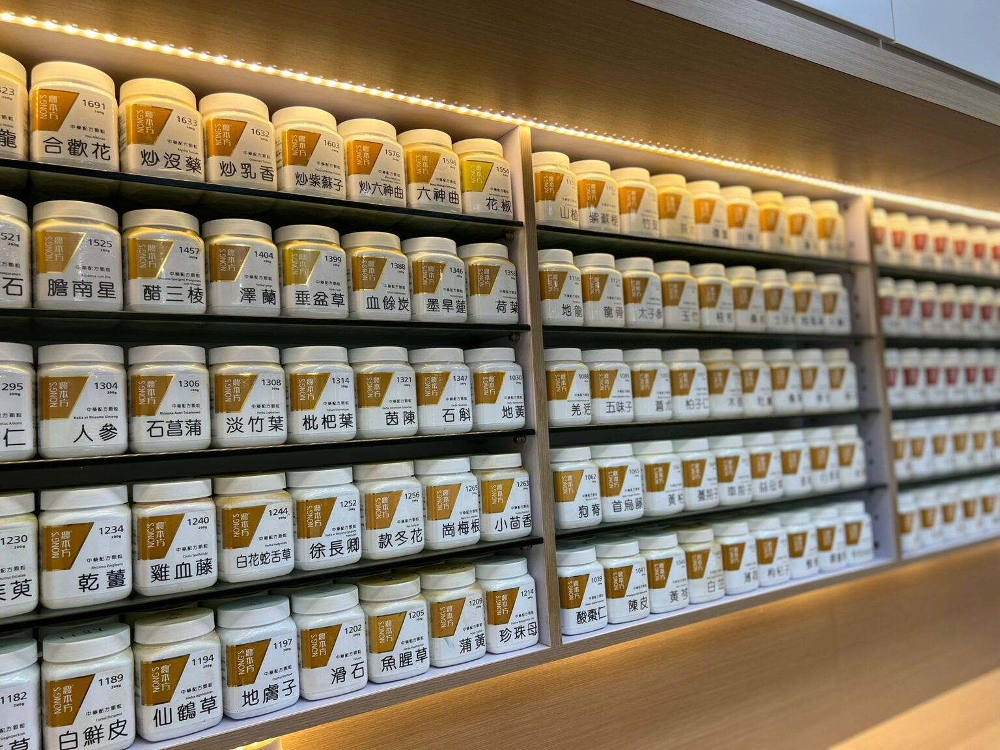
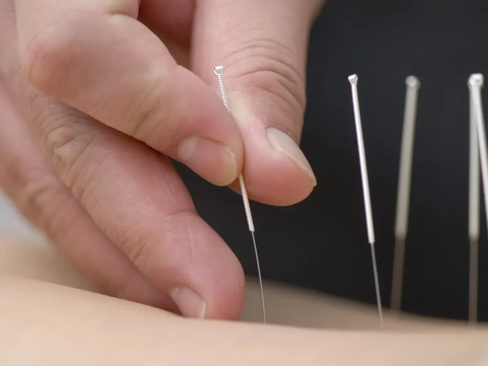
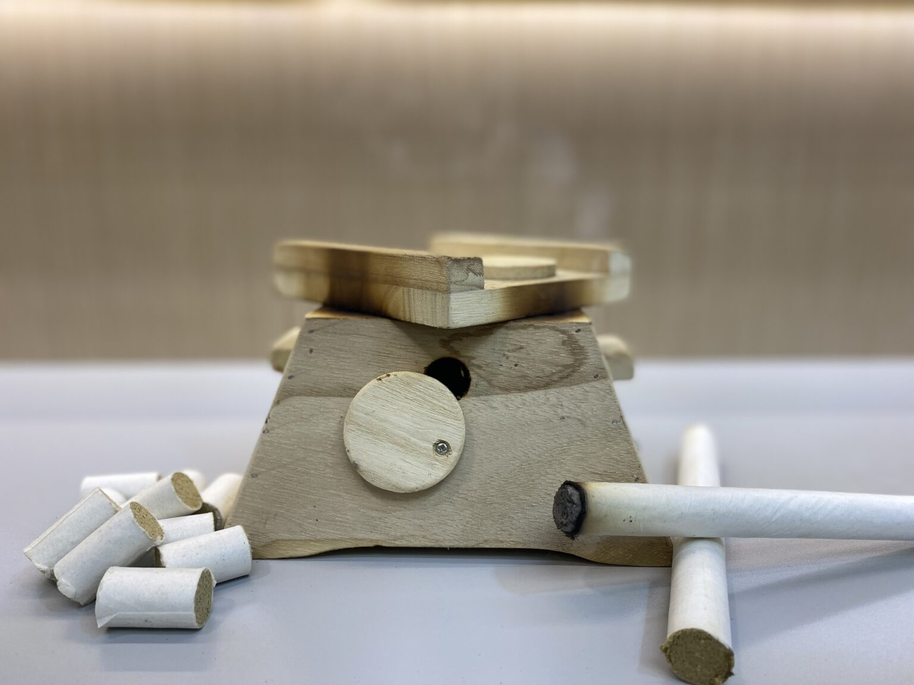
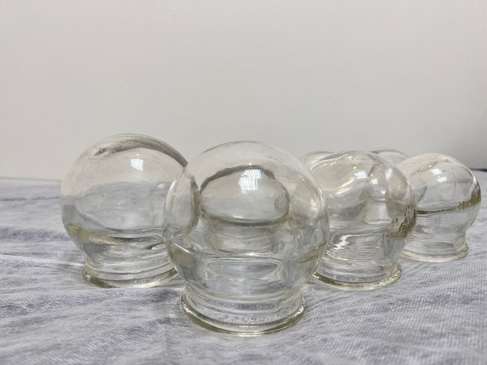
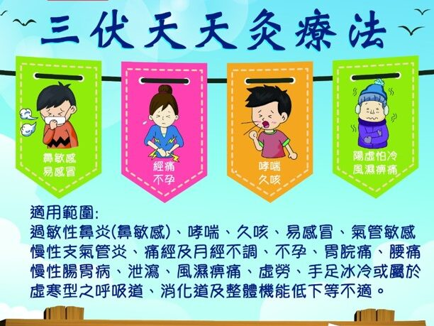
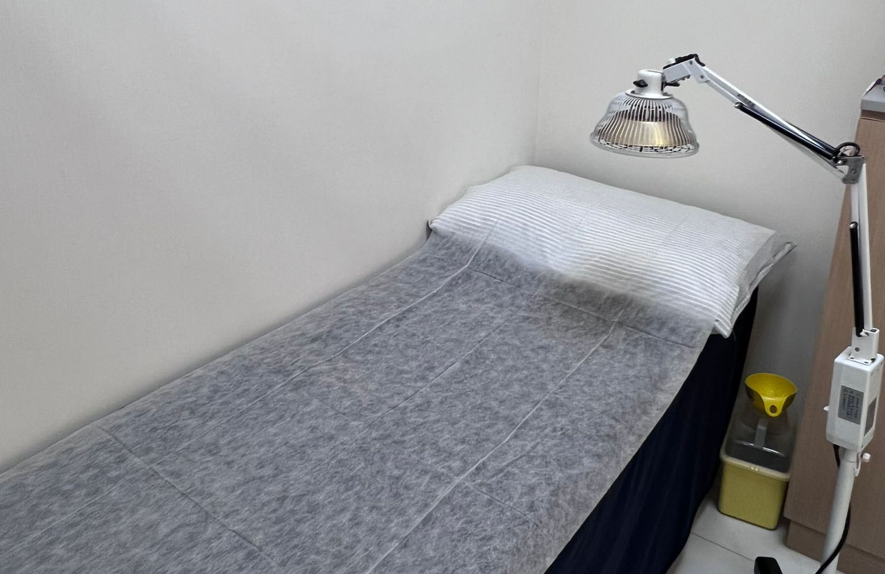
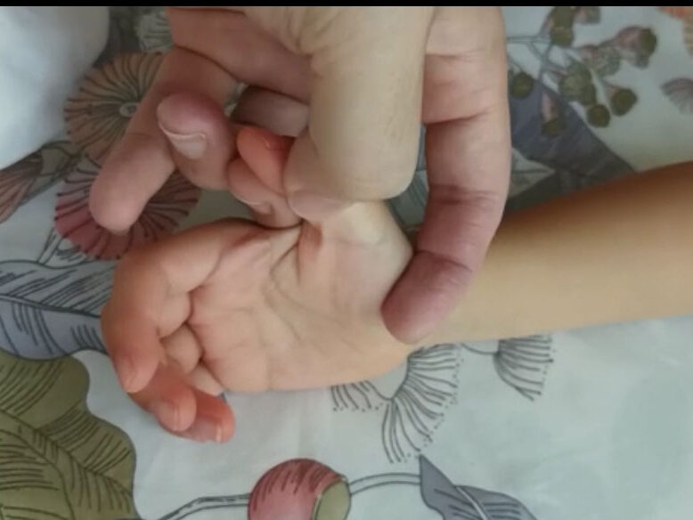
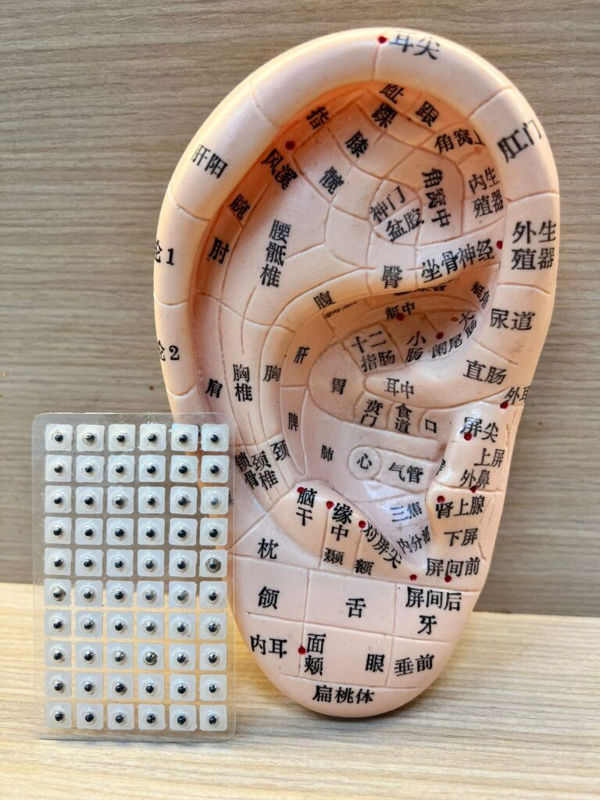

服務簡介

農本方中藥免煎沖劑
本診所應用農本方中藥免煎沖劑，致力提供快捷方便的中醫服務予市民大眾。

針灸
針灸不僅適用於痛症、中風等疾病，對治療女性不孕、月經失調、減肥、美容等有良好治療效果，而內科疾病如抑鬱、失眠、腸胃痛、水腫等等均有明顯治療效果。

艾灸
艾灸具有溫經通絡、行氣活血、消腫散結、祛濕除寒等功效，可明顯改善宮寒不孕、寒凝痛證等病症。

拔罐
拔罐可以散寒袪濕、行氣活血、疏通經絡，達到營衛調和、氣血通暢的效果。一般用於治療痛症，例如風濕關節痛、急性肌肉扭傷、慢性痛症及肌肉勞損等等。

天灸療法
天灸療法一般分為三伏天天灸(夏天)及三九天天灸 (冬天)，於夏天中陽氣最盛的日子或冬天最陰盛的日子，利用辛溫助陽藥外貼於特定的穴位或患處，引起穴位局部反應，從而調節經絡並調動機體免疫功能，達到治療疾病、溫肺逐痰、健脾補腎的作用。

骨傷推拿
骨傷運用不同的手法，調節經絡和氣血的失常，治療皮肉與筋骨損傷、骨關節及周圍軟組織的損傷等疾病。較常見的有運動創傷、風濕痹痛、勞損、關節退化、疼痛麻痹等等。

小兒推拿
小兒推拿是以中醫理論為指導，應用特定的推拿手法施治於小兒體表的經絡穴位，藉以調整臟腑功能，疏通經絡，調和氣血，以起到治療和預防疾病的作用。

耳穴
耳穴治療是以中醫理論、生物全息論及現代解剖生理學說發展而來的一種治療方法，透過刺激耳上穴位及反射區，診斷、治療和預防疾病，從而疏通經絡、行氣活血、調和臟腑。